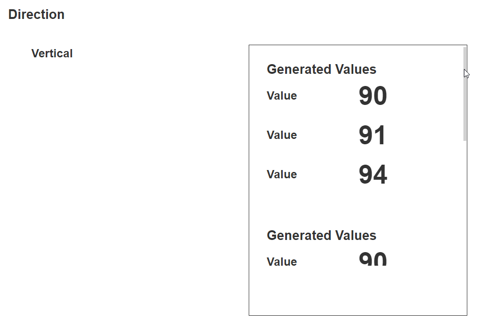
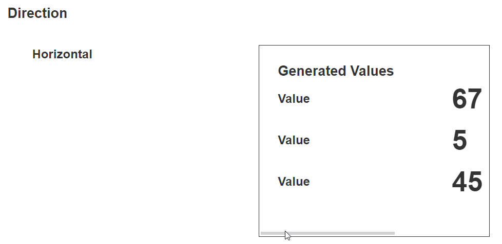
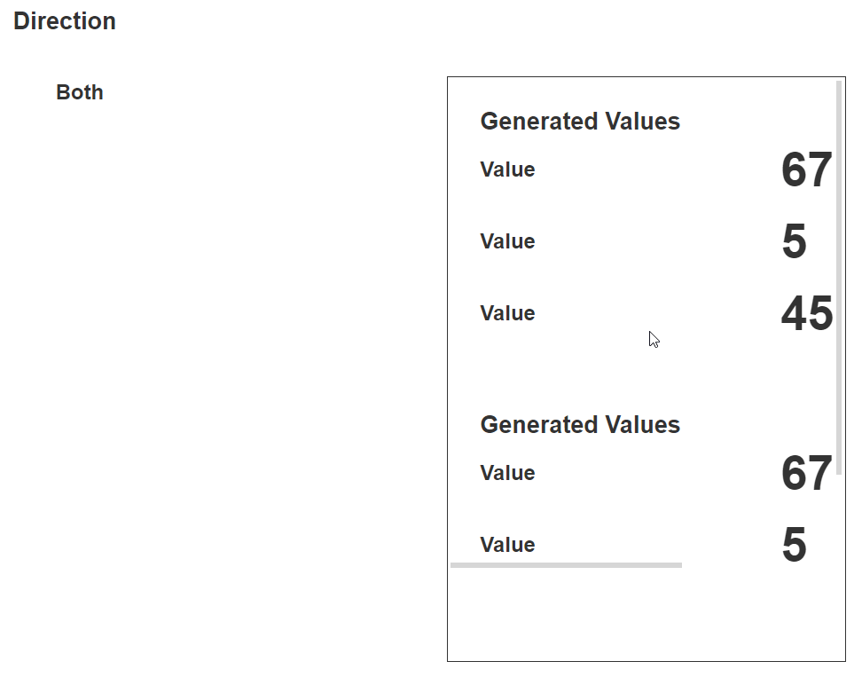

Scroll Box
The Scroll Box is a box that will create scrollbars if the content is larger than the box. In order for the scrollbar to work properly, the containing element must not have a display value of flex. This is useful if you have lots of content that cannot fit in one area of the webpage, but you would still like the user to view all the content.
Scroll Box Properties
Behavior
Common Properties
The disabled property is common to most Blocks;
See the Common Properties article for more details on common behavior properties.
Direction
This determines the direction of the scrollbar. The scrollbar can be horizontal, vertical, or both.



Swipe to Scroll
This setting enables the scrollbar when it is swiped with the finger, for example, on a touch screen device such as a phone or IPad.
Last modified: May 24, 2025